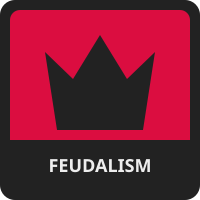

GOVERNANCE
POLITICAL ECONOMY
SECURITY
OWNERSHIP
CIVIC ORDER





Sol Values is a political quiz for a fictional science-fiction setting, made primarily for roleplaying fun. It
is also a small introduction to the setting itself: the values, ideologies, institutions, and political questions
that matter to the people living within it. Some terms or scenarios may not be fully explained, and that is
perfectly fine. You know science fiction; trust your instincts, imagine what they probably refer to, and go with
your gut.
You will be presented with a series of statements and asked to give your opinion on each one, from Strongly
Agree to Strongly Disagree, with every answer slightly affecting your scores. At the end of the quiz,
your answers will be compared against the maximum possible score for each value, producing a percentage. Answer
honestly—or at least as honestly as a citizen of the Sol Federation would.
There are questions in the test.
Sol Values measures five political axes, each representing a major ideological disagreement within the setting. Each axis has two opposing values. These positions may overlap in practice, but they represent different questions about how human society should be governed, defended, and organized.
FEDERALISM
Those with higher Federalism scores believe humanity's far-flung worlds require strong common institutions, enforceable federal law, and a shared political identity. They tend to support central coordination, redistribution between systems, and federal authority over matters considered too important to leave to individual worlds.
GOVERNANCE
AUTONOMISM
Those with higher Autonomism scores believe planets, stations, and star systems should govern themselves wherever possible. They tend to distrust distant institutions, favour local sovereignty and political experimentation, and accept a looser federation even when coordination becomes more difficult.
COMMONWEALTH
Those with higher Commonwealth scores believe wealth and infrastructure should serve the Federation as a whole, even within a market economy. They tend to support public services, strong labour rights, economic regulation, redistribution between systems, and democratic limits on corporate power.
POLITICAL ECONOMY
CORPORATISM
Those with higher Corporatism scores believe large private enterprises should have broad freedom to organize production, settlement, and public life. They tend to trust corporate administration, private investment, contractual relationships, and market provision more than public ownership or democratic economic control.
MILITARISM
Those with higher Militarism scores believe the security and influence of the Sol Federation depend on a powerful professional military capable of acting decisively beyond its borders. They tend to value hierarchy, force projection, military readiness, territorial expansion, and confronting threats before they reach Federation space.
SECURITY
DEFENCISM
Those with higher Defencism scores believe defence is a civic necessity, but that military power should remain defensive, accountable, and broadly shared. They tend to favour local preparedness, reserve forces, civil defence, fortified infrastructure, and caution toward permanent military power or foreign adventures.
SYNTHESISM
Those with higher Synthesism scores believe production should be socially owned and administered through federated syndics, cooperatives, communities, and public planning rather than by private capital owners. They tend to support workplace democracy, collective ownership, and the abolition or severe limitation of wage labour and private capital.
OWNERSHIP
CAPITALISM
Those with higher Capitalism scores believe production should remain privately owned and organized through markets, investment, wage labour, and profit. They tend to regard private enterprise and capital accumulation as necessary sources of innovation, expansion, and economic coordination.
FEUDALISM
Those with higher Feudalism scores display a concerning tolerance for inherited rank, personal rule, unequal legal status, and political obligations owed to lords rather than citizens. Even a modest score may indicate Dominion sympathies, aristocratic contamination, or a failure to read the questions correctly.
CIVIC ORDER
UNIVERSALISM
Those with higher Universalism scores believe rights, citizenship, and political personhood should not depend on ancestry, birthworld, class, or inherited station. They tend to support equal legal standing, universal civic rights, and institutions answerable to citizens rather than dynasties.
Closest-match results are experimental and for fun within a fictional setting and should not be taken too seriously.
¯\_(ツ)_/¯